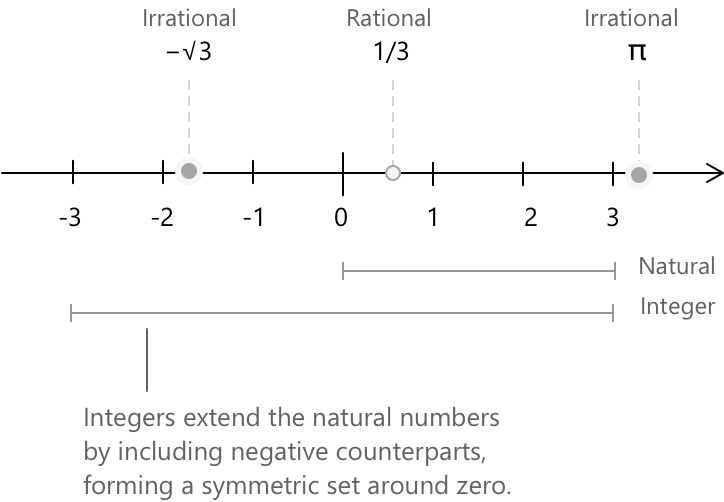

Цілі числа
Формальне означення цілих чисел
Серед різних типів чисел цілі числа виникають тоді, коли ми розширюємо натуральні числа, щоб включити адитивні протилежні значення для кожної позитивної величини. У цій розширеній системі ми знаходимо всі цілі величини, як позитивні, так і негативні, разом із нулем. Множина позначається як \(\mathbb{Z}\). Символічно ми пишемо: \[ \mathbb{Z} = {\ldots,-3,-2,-1,0,1,2,3,\ldots} \] нескінченна сукупність рівномірно розташованих точок уздовж числової прямої.

Суворе побудова моделює кожне ціле число як клас впорядкованих пар натуральних чисел. Візьмемо пари \((a,b)\) з \(a,b \in \mathbb{N}\) і скажемо, що дві пари належать до одного класу тоді, коли: \[ (a,b) \sim (c,d) \quad \longleftrightarrow \quad a + d = b + c \]
Пара \((a,b)\) представляє чисту різницю між \(a\) та \(b\):
- Пари з рівними компонентами утворюють клас, що відповідає \(0\).
- Пари, де перший компонент переважає, утворюють додатні цілі числа.
- Пари, де переважає другий компонент, утворюють від'ємні цілі числа.
Наприклад, розглянемо пару натуральних чисел \((2,5).\) У побудові, що створює цілі числа з впорядкованих пар, цей елемент представляє чисту величину, отриману шляхом порівняння двох його компонентів. Оскільки другий запис більший за перший, пара відповідає від'ємному цілому числу: \[ 2 - 5 = -3 \]
Така інтерпретація обґрунтована тим фактом, що дві пари представляють одне й те саме ціле число саме тоді, коли вони потрапляють в один і той самий клас еквівалентності, що відбувається тоді, коли: \[ (a,b) \sim (c,d) \quad \longleftrightarrow \quad a + d = b + c \]
Наприклад, пара \((4,7)\) лежить у тому самому класі, що й \((2,5)\), тому що: \[ 4 + 5 = 9 \qquad \text{та} \qquad 7 + 2 = 9 \]
Хоча компоненти відрізняються, обидві пари кодують одну й ту саму загальну різницю, ціле число \(-3.\)
Цілі числа як алгебраїчне кільце
Коли ми кажемо, що цілі числа утворюють кільце, ми маємо на увазі, що множина \(\mathbb{Z}\) оснащена двома операціями, додаванням і множенням, які взаємодіють структурованим і передбачуваним чином. Ця структура гарантує, що арифметика з цілими числами поводиться послідовно, незалежно від того, наскільки великими або малими можуть бути відповідні числа.
Аксіоми кільця для \((\mathbb{Z}, +, \cdot)\) наступні. Для всіх \(a, b, c \in \mathbb{Z}\):
- Замкненість: сума та добуток будь-яких двох цілих чисел знову є цілими числами: \(a + b \in \mathbb{Z}\) та \(ab \in \mathbb{Z}.\)
- Асоціативність: обидві операції є асоціативними: \(a + (b+c) = (a+b) + c\) та \(a(bc) = (ab)c.\)
- Нейтральні елементи: існують нейтральні елементи для обох операцій: \(a + 0 = a\) та \(a \cdot 1 = a.\)
- Адитивні обернені: кожне ціле число має протилежне: \(a + (-a) = 0.\)
- Комутативність додавання: порядок доданків не впливає на результат: \(a + b = b + a.\)
- Дистрибутивність: множення дистрибутивне відносно додавання: \(a(b+c) = ab + ac.\)
Множення в \(\mathbb{Z}\) також є комутативним, тобто \(ab = ba\) для всіх \(a, b \in \mathbb{Z}\), що робить \((\mathbb{Z}, +, \cdot)\) комутативним кільцем. Зауважимо, що цілі числа загалом не мають мультиплікативних обернених: єдиними цілими числами \(a\), для яких \(a^{-1} \in \mathbb{Z}\), є \(a = 1\) та \(a = -1\), ось чому \(\mathbb{Z}\) є кільцем, але не полем.
Поле розширює структуру кільця, вимагаючи, щоб кожен ненульовий елемент також мав мультиплікативний обернений. Раціональні числа \(\mathbb{Q}\) та дійсні числа \(\mathbb{R}\) є стандартними прикладами; цілі числа не є полем, оскільки \(2^{-1} \notin \mathbb{Z}\).
Фундаментальні властивості цілих чисел
Сумісність із рівністю: якщо два цілих числа задовольняють \(a = b\), будь-яка операція, застосована до обох сторін, зберігає цю рівність. Зокрема: \[a + c = b + c \] \[ac = bc\]
Комутативні закони: порядок операндів не впливає на результат: \[a\ + b = b + a \] \[ab = ba\]
Асоціативні закони: групування доданків не змінює результат: \[a + (b + c) = (a + b) + c \] \[a(bc) = (ab)c \]
Дистрибутивний закон: множення дистрибутивне відносно додавання: \[ a(b + c) = ab + ac \]
Цілі числа також включають нейтральні елементи для двох операцій: додавання нуля залишає будь-яке ціле число незмінним, а множення на одиницю зберігає його значення: \[ a + 0 = a \qquad a \cdot 1 = a \]
Цілі числа в системі з основою 10
Цілі числа зазвичай записують за допомогою десяткової системи, тобто системи з основою 10. Кожна цифра в числі має позиційну вагу, що визначається відповідним степенем десяти. Комбінуючи ці зважені цифри, ми можемо відтворити все значення цілого числа. Розглянемо, наприклад, число \(235.\) Використовуючи позиційний принцип, ми можемо представити число як суму степенів десяти: \[ 235 = 2 \times 10^{2} + 3 \times 10^{1} + 5 \times 10^{0} \]
Цей розклад точно показує, як кожна цифра впливає на кінцеве значення. У наступній таблиці узагальнено структуру числа:
| Цифра | Розрядне значення | Внесок |
|---|---|---|
| 2 | \(10^{2}\) (сотні) | \(2 \times 10^{2} = 200\) |
| 3 | \(10^{1}\) (десятки) | \(3 \times 10^{1} = 30\) |
| 5 | \(10^{0}\) (одиниці) | \(5 \times 10^{0} = 5\) |
Додавання цих внесків відновлює ціле число: \[ 235 = 200 + 30 + 5 \]
Аналогічний механізм застосовується до будь-якого цілого числа, записаного в десятковому позначенні. Кожна цифра виступає як коефіцієнт, що множить певний степінь десяти, а саме ціле число отримують шляхом підсумовування всіх цих позиційних внесків.
Двійкова система
Хоча цілі числа зазвичай записують в основі 10, інші системи числення є так само правильними, а іноді й зручнішими. Особливо важливою альтернативою є основа 2, або двійкова система, яка використовує лише цифри \(0\) та \(1\). Це представлення є фундаментальним у комп'ютерних науках та цифровій електроніці, де інформація зберігається та обробляється за допомогою двостанових пристроїв. У системі з основою 2 кожна позиція відповідає степеню двійки, а не степеню десяти. Будь-яке ціле число можна переписати в двійковій системі, розклавши його як суму зважених степенів двійки. Наприклад, розглянемо ціле число: \[ 53 \] Щоб перевести його в двійкову систему, ми неодноразово ділимо на \(2\) і записуємо остачі. Читаючи остачі знизу вгору, ми отримуємо двійковий розклад.
| Ділення на 2 | Частка | Остача |
|---|---|---|
| \(53 \div 2\) | \(26\) | \(1\) |
| \(26 \div 2\) | \(13\) | \(0\) |
| \(13 \div 2\) | \(6\) | \(1\) |
| \(6 \div 2\) | \(3\) | \(0\) |
| \(3 \div 2\) | \(1\) | \(1\) |
| \(1 \div 2\) | \(0\) | \(1\) |
Читаючи остачі вгору, отримуємо двійкове представлення \(53 = 110101.\) Ми можемо перевірити перетворення, розклавши двійкові цифри за степенями двійки:
| Двійкова цифра | Степінь двійки | Внесок |
|---|---|---|
| \(1\) | \(2^{5}\) | \(1 \times 2^{5} = 32\) |
| \(1\) | \(2^{4}\) | \(1 \times 2^{4} = 16\) |
| \(0\) | \(2^{3}\) | \(0 \times 2^{3} = 0\) |
| \(1\) | \(2^{2}\) | \(1 \times 2^{2} = 4\) |
| \(0\) | \(2^{1}\) | \(0 \times 2^{1} = 0\) |
| \(1\) | \(2^{0}\) | \(1 \times 2^{0} = 1\) |
Сума внесків підтверджує перетворення: \[ 32 + 16 + 0 + 4 + 0 + 1 = 53 \]
Оператор modulo
Модульна арифметика описує поведінку цілих чисел, коли нас цікавлять лише їхні остачі після ділення на фіксоване ціле число \(n\). У множині \(\mathbb{Z}\) два цілих числа називаються еквівалентними за модулем \(n\), якщо вони відрізняються на кратне \(n\). Наприклад, в арифметиці за модулем \(12\) цілі числа \(14\) та \(2\) представляють один і той самий клас виділків, оскільки \(14 – 2 = 12\). Додавання та множення виконуються як зазвичай, але кінцевий результат замінюється його остачею при діленні на \(n\). Наприклад:
\[7 + 9 \equiv 4 \pmod{12}\] \[ 5 \times 7 \equiv 11 \pmod{12}\]
У випадку \(5 \times 7\) добуток дорівнює \(35 = 24 + 11\); оскільки \(24\) є кратним \(12\), значенням добутку за модулем \(12\) є остача \(11\).
Такого роду арифметика широко використовується поза межами чистої математики. У комп'ютерних науках оператор modulo є незамінним для отримання остач, створення циклічних шаблонів та утримання значень у визначеному діапазоні. Знайомим прикладом є місяці року: додавання \(n\) місяців природно обробляється за модулем \(12\), оскільки підрахунок місяців починається заново після грудня.
У багатьох мовах програмування, включаючи Java, оператор modulo записується як %. Наступний приклад обчислює місяць, що наступає через три місяці після жовтня:
int month = 10; // Жовтень
int result = (month + 3) % 12;
System.out.println(result); // Вивід: 1 (Січень)
// Використовуючи операцію modulo 12, вираз (month + 3) не дає 13.
// Замість цього, 13 замінюється на його остачу від ділення на 12, яка дорівнює 1.
Цілі числа та роль індукції
У математиці кілька структурних властивостей цілих чисел залежать від рекурсивної природи натуральних чисел. Натуральні числа формують основу, на якій будуються цілі числа, і багато тверджень про \( \mathbb{Z} \) можуть бути зведені до властивостей, вперше встановлених для \( \mathbb{N} \). Механізмом, який дозволяє такі покрокові побудови та доведення, є Принцип математичної індукції.
Починаючи з формального означення індуктивної множини, розглянемо множину \( A \subseteq \mathbb{N} \), визначену властивістю \( p(n) \), таку що \(A = \lbrace n \in \mathbb{N} \mid p(n) \rbrace\). Припустимо, що виконуються наступні умови:
- \( p(0) \) є істинним, тобто \( 0 \in A. \)
- \( p(n) \rightarrow p(n+1) \,\forall \ n \in \mathbb{N}.\) Якщо \( n \in A \), то \( n+1 \in A.\)
Таким чином, \( p(n) \) є істинним для кожного \( n \in \mathbb{N}.\) Конкретний приклад показує, як це переноситься на цілі числа. Розглянемо твердження, що сума перших \( n \) додатних цілих чисел дорівнює:
\[ \frac{n(n+1)}{2} \]
Базовий випадок \( n = 1 \) є очевидним: обидві частини дорівнюють \( 1 \). Для індуктивного кроку, припустимо, що тотожність виконується для деякого \( n \), додамо \( n+1 \) до обох частин і перевіримо, що результат відповідає формулі, обчисленій для \( n+1 \). Оскільки натуральні числа вбудовуються в \( \mathbb{Z} \) як невивідні цілі числа, ця тотожність виконується і в \(\mathbb{Z}\), і той самий метод поширюється на будь-яке твердження про \(\mathbb{Z}\), яке можна звести до властивості \(\mathbb{N}\) через побудову цілих чисел з впорядкованих пар натуральних чисел.